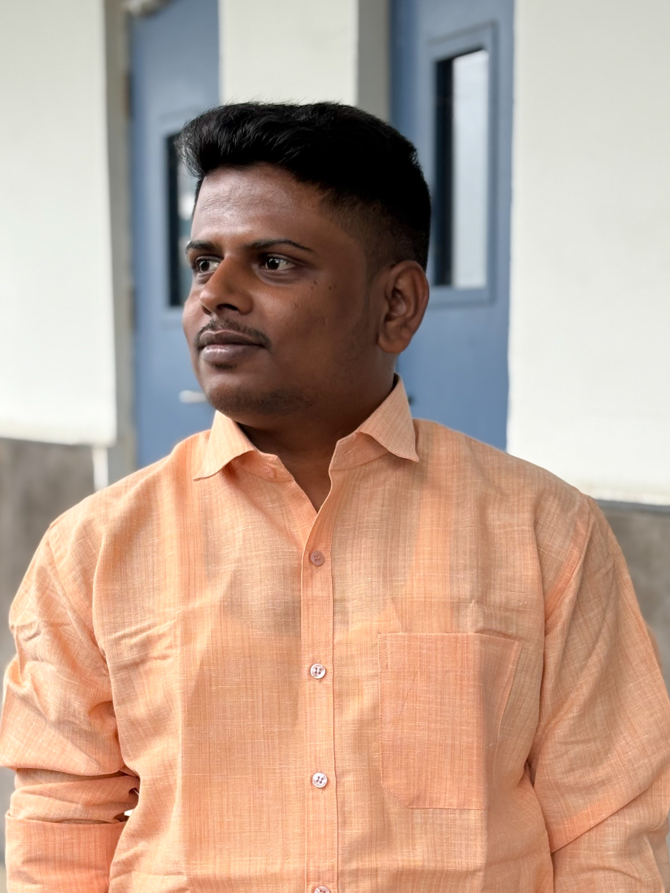

MANJUNATHA M R
Department of Mathematics,
Indian Institute of Technology, Indore
I currently focus on various properties of special functions for my PhD thesis, including monotonicity, convexity, concavity, sharp bounds, and inequalities. Dr. Sanjeev Singh and Prof. Árpád Baricz are supervising my work. I am proficient in Kannada, Hindi, and English, and you can reach me at manjuoffi@gmail.com for further inquiries.
Since July 2023, I have been a PhD student in the Department of Mathematics at the Indian Institute of Technology Indore, located in Indore, India. I earned my Master of Science in Mathematics from the University of Mysore, where I studied from August 2019 to November 2021. Before that, I completed my Bachelor of Science in Physics, Mathematics, and Computer Science at Yuvaraja's College Mysore from June 2016 to April 2019, both in Mysore, India.
In November 2022, I received the NET JRF Scholarship. I worked at Infosys in Mysore, Karnataka, India, holding various positions over one year and seven months. From April 2022 to June 2023, I served as a Test Engineer, specializing in Automated Testing and Core Java. Before that, I worked as a System Engineer from February 2022 to April 2022, focusing on Automated Testing and test automation framework design. I began as a System Engineer Trainee from December 2021 to February 2022.
Present:
Experience:
Education:
Publications:
Achivements & awards:
- Received the best paper presentation award for a talk on our research group's work with the title at the Annual Conference of ISMMACS and the International Conference on Differential Equations: Theory, Mathematical Modeling, and Scientific Computing.
- NET (JRF)
Conferences/Workshops/Talks:
- The 39th Annual Conference of the Ramanujan Mathematical Society,
organised by CHRIST (Deemed to be University), Bengaluru, from 27th
December to 29th December 2024
- Delivered a Contributory talk with tittle “Partition of quadratic residues and non-residues in \(\mathbb{Z}_p^*\) for an odd prime \(p\)”
- The Annula Conference of ISMMACS and the International Conference on Differential Equatons:
Theory, Mathematical Modeling, and Scientific Computing, organized by the Dhirubhai Ambani
University, Gandhinar, Gujarat, India from December 7th-10th, 2025.
- Delivered a Contributory talk with tittle "Turán inequality for Ferrers function of the first Kind".
Technologies and programing:
- Selenium ( Advanced) ( Training and experience in Infosys with internal certificates)
- Core/Advanced Java ( with internal certificates of Infosys and, importantly, experience in Infosys).
- Buiesness Driven Development (BDD) ( with experience in Infosysy)
- Web development with HTML5, CSS, JS, and Python. (Acquired through self-interest and trial and error)
- Basic knowledge of C, C++, Python, Shell scripting (Linux), and Microprocessor.